판단력이 새 기술이에요
발표자는 해마다 나오는 트렌드 영상들이 서로 엇갈린다는 말로 시작해요. 굵은 세리프 폰트가 끝났다는 사람과 그게 2027년의 얼굴이라는 사람이 동시에 있죠. 그래서 사이트가 어떻게 느껴지고 어떻게 성과를 내는지를 실제로 바꾸는 것만 골랐다고 해요. 그 첫 번째이자 가장 중요하다고 꼽은 게 판단력이에요.
AI 초안은 완성품처럼 보여요
AI 도구가 쓸 만한 첫 초안을 만든다는 건 이제 논쟁거리도 아니에요. 문제는 초안이 경험 없는 눈에는 이미 완성된 것처럼 보인다는 점이에요. 버튼은 다 눌리고 페이지마다 그럴듯한데, 방문자는 다섯 개의 메시지 중에서 하나를 골라야 하고 정작 중요한 증거와 행동 버튼은 군더더기에 묻혀요.
영상은 이걸 AI가 만든 듯한 금융 앱 랜딩 페이지로 보여 줘요. 헤드라인, 소개 문구, 두 버튼, 숫자 카드 세 장, 언론 로고 줄이 모두 비슷한 무게로 놓여 있어요. 그 위에 'Weak hierarchy'라는 자막이 떠요.
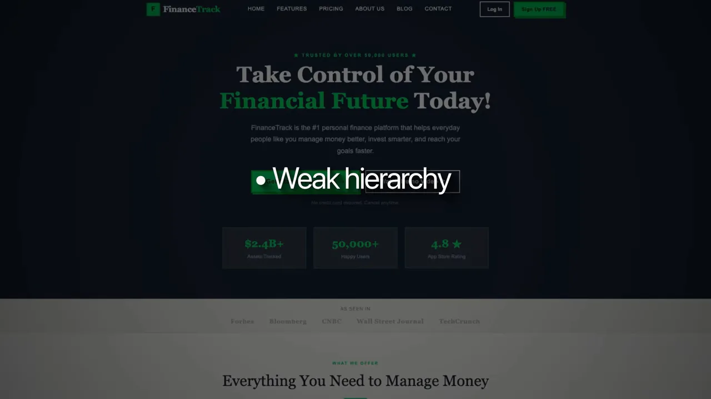
AI는 지시를 그대로 완성할 뿐, 그 지시가 틀렸다고 되묻지 않아요. 발표자 말대로 모르는 건 모르는 채로 남아요. 반대로 같은 도구를 경험 있는 디자이너가 쓰면 위계나 인터랙션이 어디서 무너지는지 고객에게 닿기 전에 잡아내고, 첫 결과물을 버려야 할 때도 알아요.
Judgment means knowing which problem deserves the next hour of fine-tuning and which doesn't.
판단력이란 다음 한 시간의 손질을 어느 문제에 쓸지, 어디엔 쓰지 않을지 아는 거예요.
— 영상 02:13
예를 들어 초점이 하나여야 하는 페이지에 그라데이션이나 애니메이션을 하나 더 얹는 건 발전이 아니에요. 방문자가 가격이나 '나한테 맞는지'에 대한 답을 원하는데 모호한 문단 주변 여백을 다듬는 것도 마찬가지고요. 고객들도 이제 디자인의 이유를 묻기 때문에, 디자이너는 기획서에 의문을 던지고 빌드 전에 고객을 조사하고 트레이드오프를 설명할 수 있어야 해요.
사례: Prova Health
발표자 팀이 만든 Prova Health 사이트예요. 짙은 남색 바탕에 'Accelerating the adoption of health innovation'이라는 헤드라인과 차트 일러스트가 있어요. 사람이 한 디자인을 AI 보조 개발로 구현했고, 출시 전에 개발자가 결과물을 검수했어요.
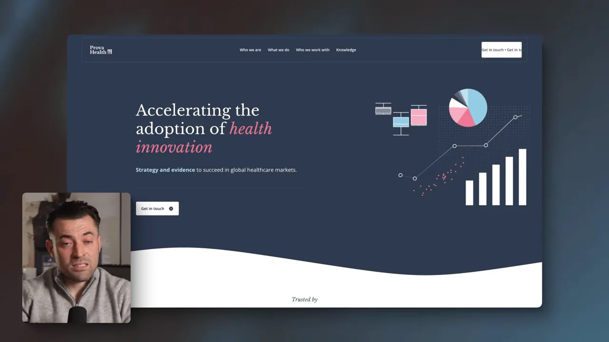
이 모델에서 페이지 10개를 늘리는 일을 숫자로 비교해요. 승인된 내용과 에셋을 핵심 템플릿에 넣고 스키마와 최적화까지 하는 데, 예전엔 2주 정도에 수작업 약 30시간이 들었어요. 지금은 1~2시간의 입력이면 돼요.
발표자가 강조하는 건 AI가 빌드를 만졌다는 사실이 아니에요. 팀이 승인된 패턴을 되풀이하는 시간을 줄이고, 그 안의 결정을 확인하는 데 시간을 더 쓰게 됐다는 점이에요. 화면의 슬라이드에는 그 확인 질문 네 개가 차례로 붙어요.
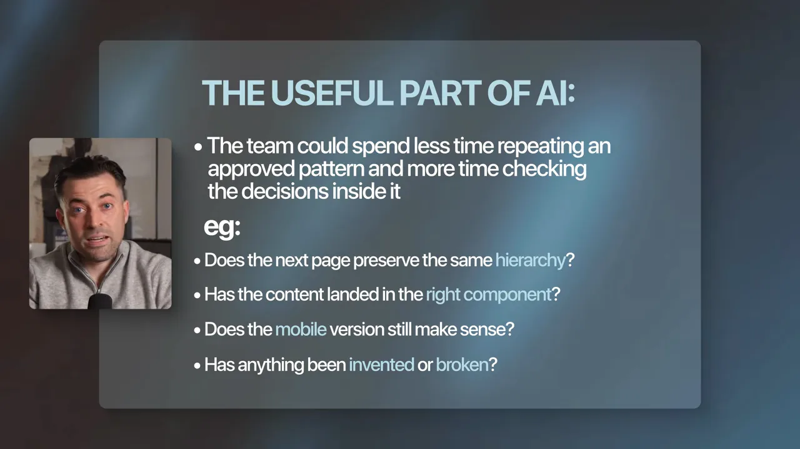
더 많은 사람이 매끈한 첫 초안을 뽑을 수 있게 되면, 차이는 검토를 통과해 남는 것과 고객이 보기 전에 빼 버리는 것에서 나요. 그래서 발표자는 취향과 판단력의 값이 훨씬 커진다고 봐요.
사이트는 영업 도구예요
두 번째 트렌드는 사이트를 영업 도구로 보는 시각이에요. 발표자는 고객과 나누는 대화가 완전히 바뀌었다고 해요. 예전엔 "예쁜 웹사이트를 원해요"였다면, 지금은 "제 웹사이트가 어떻게 돈을 벌어 주나요?"라고 묻는대요.
SEO(Search Engine Optimization)나 CRO(Conversion Rate Optimization)는 몇 년 전부터 있던 개념이에요. 바뀐 건 사업주가 사이트 성과를 따지는 강도예요. 화면에 뜬 고객 메시지 두 개가 그걸 보여 줘요. 위쪽은 사이트를 시작하기 전에 전환 감사를 해 달라는 부탁이고, 아래쪽은 제안서에 새 사이트가 어떻게 판매를 돕고 방문자를 고객으로 바꿀지 넣어 달라는 요청이에요.
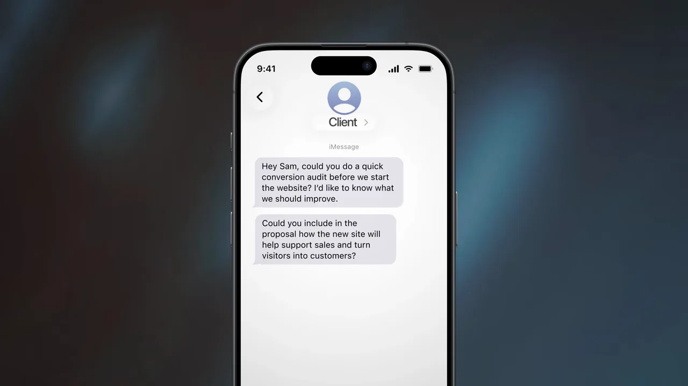
레이아웃보다 질문이 먼저예요
이 압박은 일의 순서를 바꿔요. 레이아웃을 고르기 전에 방문자 쪽 질문부터 답해야 해요. 슬라이드에 그 질문 네 개가 정리돼 있어요.
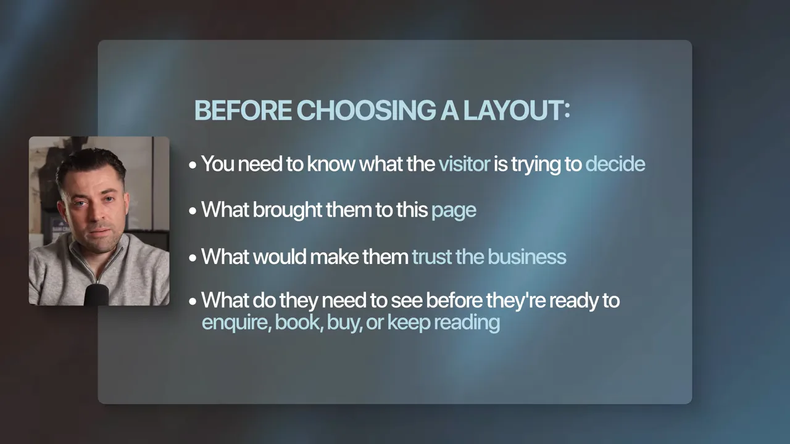
이 질문에 답하지 못하는 페이지는 시각적으로 한 번 더 다듬어도 살아나지 않아요.
홈페이지가 해야 할 네 가지
홈페이지도 회사가 만든 모든 걸 늘어놓는 갤러리가 아니래요. 화면에서는 데이터 분석 서비스 홈페이지 위로 한 문장이 떠요. 맞는 방문자가 자기 얘기라고 알아보고, 제안을 이해하고, 회사가 믿을 만한 이유를 보고, 다음 단계로 넘어가게 도와야 한다는 문장이에요. 뒤에 깔린 페이지에도 '10,000+ 기업이 신뢰', '4.8/5 평점' 같은 신뢰 숫자가 헤드라인 바로 아래에 있어요.
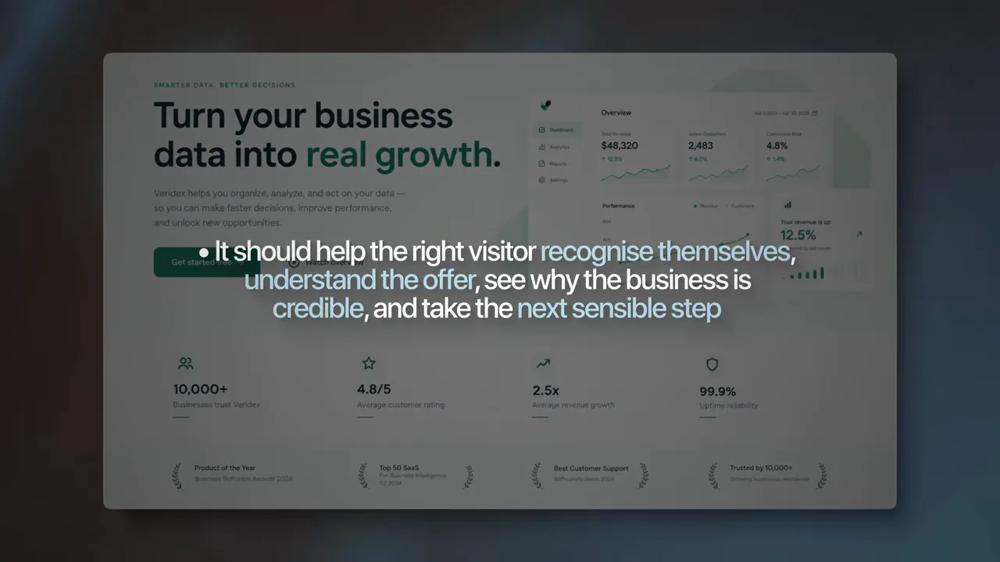
그 네 가지를 방문자가 거치는 순서대로 놓으면 이렇게 돼요. 하나라도 빠지면 다음 칸으로 넘어가지 못해요.
그래서 디자인을 평가하는 기준도 바뀌어요. 아주 매끈해 보이는 페이지라도 제안이나 다음 단계를 찾기 어렵다면 실패한 페이지예요.
기능이 먼저, 형태는 그걸 돕는 역할
세 번째는 형태와 기능의 관계예요. 발표자의 입장은 분명해요. 기능이 언제나 먼저고, 형태도 여전히 중요해요. 아름다운 사이트가 전환도 잘할 수 있어요. 다만 투박한데도 잘 팔리는 세일즈 페이지가 있는데, 제안과 카피가 디자인과 상관없이 판매를 끌고 가기 때문이에요. 디자이너는 그 판매 논리에서 출발해 페이지를 더 쓰기 쉽고 더 믿음직하게 만들되, 다듬는 작업이 제안보다 앞에 나서면 안 된대요.
영업과 디자이너가 엇갈리는 지점
여기서 영업 쪽과 디자이너가 서로 딴소리를 하기 쉬워요. 영상은 퍼널 빌더인 ClickFunnels 홈페이지를 배경으로 두 사람의 시선을 차례로 띄워요. 먼저 정장 아이콘 위로 '영업 담당자는 전환이 잘되는 긴 페이지를 본다'는 말풍선이 떠요.
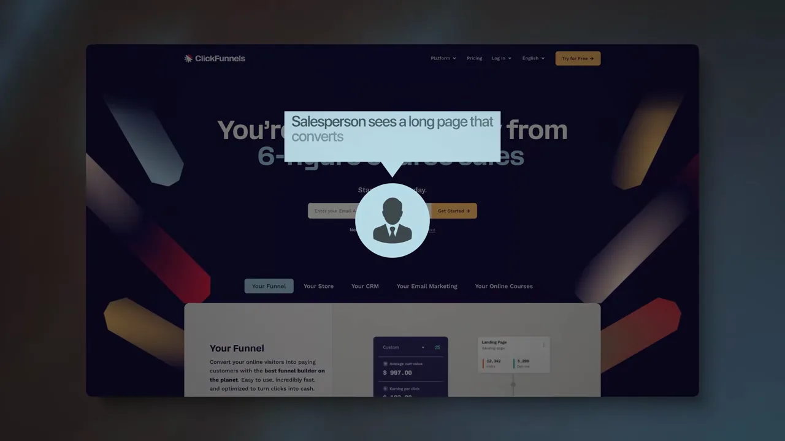
몇 초 뒤 같은 페이지 위에 이번엔 컴퓨터 앞에 앉은 인물 아이콘이 나와요. 말풍선은 '디자이너는 못생긴 페이지를 보고, 사람들이 왜 사는지 이해하기 전에 전부 다시 만들고 싶어 한다'예요.
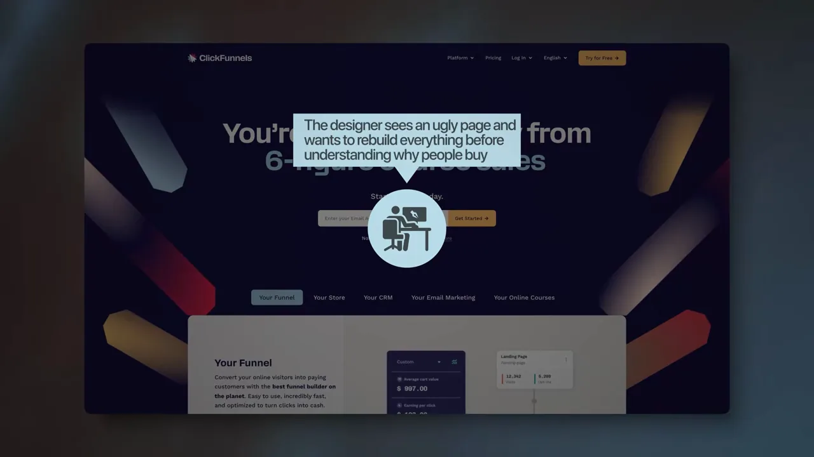
발표자는 둘 다 따로 보면 틀리지 않았다고 해요. 하지만 각자 자기 취향에서만 출발하면 둘 다 효과 있던 부분을 망가뜨릴 수 있어요.
| 영업 담당자 | 디자이너 | |
|---|---|---|
| 페이지를 보면 | 전환이 잘되는 긴 페이지 | 못생긴 페이지 |
| 내리는 결론 | 디자인은 거의 군더더기 | 전부 다시 만들자 |
| 놓치는 것 | 겉모습도 신뢰의 단서라는 점 | 사람들이 왜 사는지 |
발표자가 내놓는 순서는 이래요. 판매 흐름과 증거가 이미 일하고 있게 두고, 디자인은 그 요소들을 더 눈에 띄고 더 믿을 만하게 만드는 데 써요. 제안도 카피도 똑같은 퍼널 두 개를 놓고 보면, 시각적 완성도가 한쪽에 우위를 줄 수 있어요. 사람들은 겉모습을 신뢰를 가늠하는 단서 중 하나로 쓰기 때문이에요. 결국 페이지는 그 회사가 파는 제품이나 서비스만큼 공들여 보여야 해요.
건너뛸 것: 모션 위주 사이트
발표자가 조금 논쟁적일 수 있다며 건너뛰라고 한 게 모션 위주 사이트예요. 특히 AI로 Higgsfield 같은 도구를 써서 화면 곳곳에 무거운 모션을 얹은 기묘한 디자인을 만들기 쉬워지면서 과해지는 경우가 많대요. 영상에는 전용기 회사 Jesko Jets처럼 비행기 이미지가 화면을 가득 채우는 모션 사이트 예시가 지나가요.
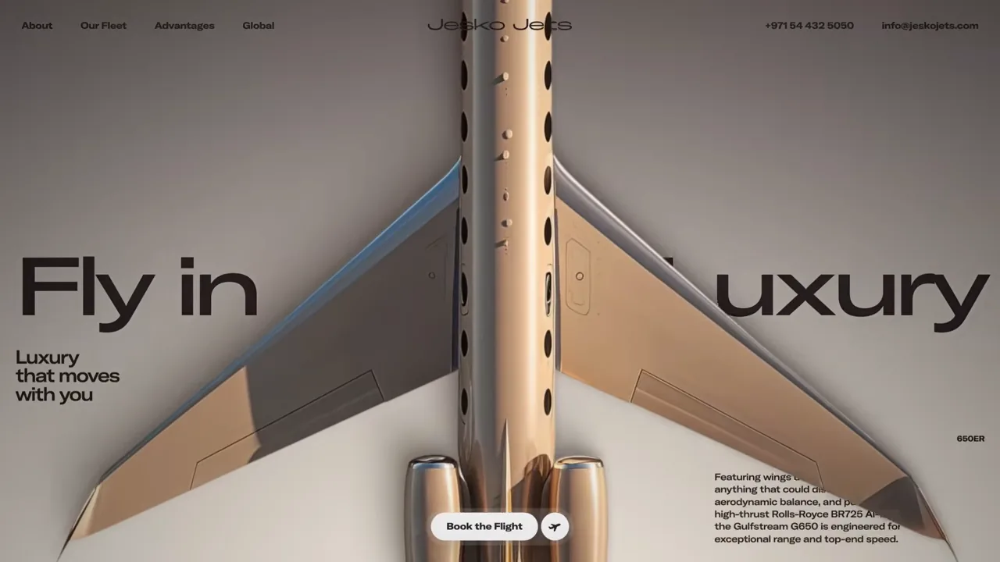
가장 나쁜 예로 꼽은 건 스크롤재킹이에요. 스크롤을 해도 페이지는 안 움직이고 애니메이션만 재생되는 방식인데, 발표자는 그런 사이트에서 매번 바로 나간다고 해요. 모션이 전환을 도울 거라고 가정하지 말래요. 오히려 정반대인 경우가 많대요.
그래서 간단한 테스트를 써요. 흐름으로 그리면 이래요.
flowchart LR
A["애니메이션을 멈춘다"] --> B{"페이지가 여전히
제안을 설명하나?"}
B -- 아니요 --> X["효과가 페이지를
너무 많이 떠맡고 있음"]
B -- 예 --> C["느린 기기에서
연출을 기다리지 않고
주요 CTA까지 가 본다"]
C --> D{"스크롤 통제를
잃지 않고 닿나?"}
D -- 아니요 --> X
D -- 예 --> O["모션을 둬도 괜찮음"]
영상은 이 결론을 노트북 화면 속 랜딩 페이지 위에 그대로 띄워요. 페이지가 어둡게 가라앉고 'The effect is carrying too much of the page'라는 문장만 남아요.
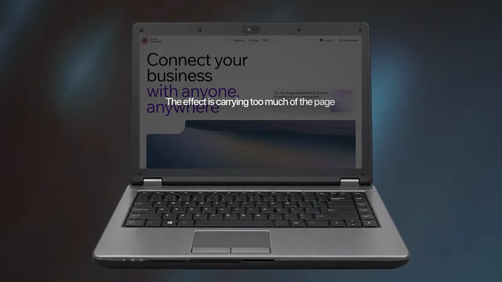
접근성은 기획서에 들어가야 해요
네 번째 트렌드의 제목 카드는 'Accessibility belongs in the brief', 접근성은 기획서에 들어가야 한다는 뜻이에요. 출발점은 유럽 접근성법이에요.
화면에는 EAA(European Accessibility Act)의 웹사이트 접근성 요구사항을 소개하는 글이 뜨고, 시행일인 'June 28, 2025'에 하이라이트가 칠해져 있어요. 발표자는 2025년 6월 28일부터 제품과 서비스에 요구사항이 적용되기 시작했다고 말해요. 다만 특정 사이트가 대상인지는 그 서비스와 사업에 적용되는 현지 규정에 따라 다르고, 법률 조언은 아니라고 선을 그어요.
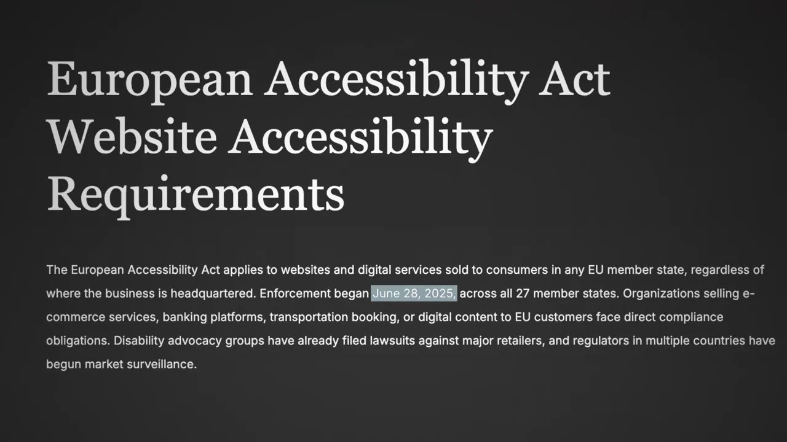
디자인 작업은 구체적이에요
슬라이드에 항목 일곱 개가 차례로 쌓여요. 키보드 탐색부터 누르기 쉬운 컨트롤까지예요.
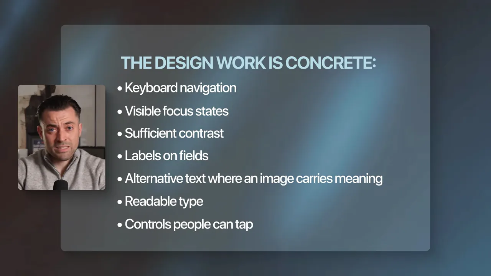
슬라이드의 일곱 항목을 각각 무엇을 확인하는지로 풀면 이래요.
| 항목 | 확인할 것 |
|---|---|
| 키보드 탐색 | 마우스 없이 Tab 키만으로 모든 곳에 가고 나올 수 있나요? |
| 보이는 포커스 상태 | 지금 어디에 있는지 눈에 보이나요? |
| 충분한 대비 | 글자와 배경이 확실히 구분되나요? |
| 입력 칸 레이블 | 폼의 각 칸이 무엇을 받는지 적혀 있나요? |
| 대체 텍스트 | 의미를 담은 이미지에 설명이 붙어 있나요? |
| 읽기 쉬운 글자 | 크기와 굵기가 읽기에 충분한가요? |
| 누르기 쉬운 컨트롤 | 손가락으로 정확히 누를 만큼 큰가요? |
마우스를 내려놓고 써 보기
발표자가 권하는 가장 싼 검사는 마우스를 내려놓고 키보드로만 페이지를 다녀 보는 거예요. 슬라이드에는 그때 스스로 물을 질문 네 개가 있어요.
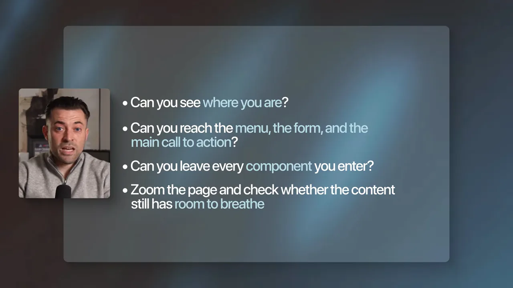
이게 별나게 들릴 수 있지만, 발표자는 이런 항목이 가장자리 사례를 위한 장식이 아니라고 해요. WHO(World Health Organization)는 세계 인구 여섯 명 중 한 명이 어느 정도의 장애를 겪는다고 추정해요. 그러니 출시 전에 로딩 속도나 가독성처럼 이 방문자들도 함께 계획하래요.
왜 처음부터 넣어야 할까요?
접근성은 마지막에 덧대는 패치가 되면 아주 비싸져요. 발표자는 두 가지 예를 들어요.
- 색 체계에 처음부터 쓸 만한 대비가 없었다면, 고칠 때 사이트 전체의 모든 컴포넌트를 건드려야 할 수 있어요.
- 폼을 분명한 레이블과 오류 상태 없이 만들었다면, 겉모습만 바꿔서는 해결되지 않아요.
그래서 이 요구사항을 처음부터 기획서와 컴포넌트 라이브러리에 넣고 검토 항목으로 삼으래요. 분명한 위계, 읽기 쉬운 글자, 더 큰 터치 영역, 더 강한 대비는 넓은 사람들의 마찰을 줄여요. 발표자는 이게 전환율을 크게 올리진 않을 수 있다고 솔직하게 말해요. 대신 접근 가능한 기준선을 먼저 만들고 그 위에서 변형을 테스트하라고 해요.
범위도 법 준수보다 넓어요. 밝은 햇빛 아래에서 폰을 보는 사람과 보조 기술로 페이지를 다니는 사람 모두 보기 쉽고 조작하기 쉬운 컨트롤의 덕을 봐요. 좋은 접근성은 나머지 경험에 이미 들이고 있어야 할 정성과 같은 데서 나온다는 게 이 구간의 결론이에요.
AI와 검색이 읽을 수 있는 사이트
마지막 트렌드 카드는 'Make your site readable to AI'예요. 웹사이트는 AI 시스템이 읽고 해석하는 원천이 되니, 구조가 분명하고 답이 직접적이어야 한대요. 그래도 인용이 보장되진 않는다는 단서를 함께 달아요.
화려하지 않은 작업 네 가지
발표자 말로는 이 일은 꽤 수수해요. 시맨틱 헤딩을 쓰는 것부터 시작해서, 슬라이드에 사이트를 만들면서 내릴 선택 네 가지가 있어요.
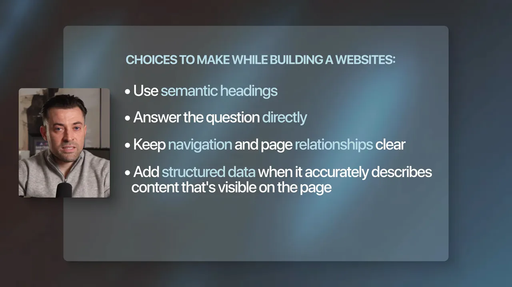
여기에 하나를 더 보태요. 정보가 원래 행과 열로 나뉘는 성격이면 표를 쓰래요. 이런 작은 선택들이 LLM(Large Language Model)이 페이지를 해석하기 쉽게 만들어요.
서비스 페이지라면
예로 든 건 직원 대상 전기차 충전 지원 서비스의 페이지예요. 'Save Up to 50% on EV Charging'이라는 헤드라인과 그 아래 설명 문단에 빨간 테두리가 쳐져 있어요. 헤드라인이 캠페인 문구 뒤에 숨지 않고 무엇을 해 주는지 바로 말하고, 첫 문단이 누구를 위한 것이고 무슨 문제를 푸는지 말하는 모습이에요.
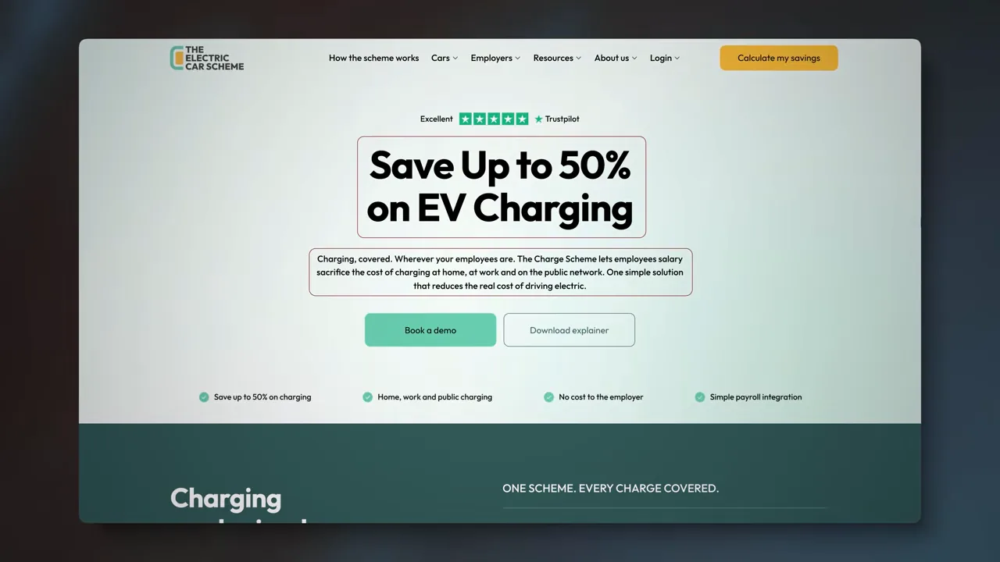
서비스 페이지에 대한 발표자의 처방을 정리하면 이래요.
- 헤딩이 서비스 이름을 말하나요? 캠페인 문구 안에 숨기지 않아요.
- 첫 문단이 누구를 위한 것이고 어떤 문제를 푸는지 말하나요?
- 실제로 한 작업을 보여 주나요?
- 평소 판매를 늦추는 질문에 답하나요?
- 다음 단계가 아주 분명한가요?
- 위치, 작성자, 가격대, 절차, 자격 조건처럼 구매자에게 중요한 정보를 다섯 페이지에 흩어 놓지 않았나요?
구조화된 데이터는 지름길이 아니에요
구조화된 데이터가 이 모든 걸 대신하진 않아요. 페이지에 실제로 있고 정확한 정보를 설명해야 해요. 이때 영상은 구글 검색 센터 문서의 '왜 페이지에 구조화된 데이터를 넣을까요?' 부분을 띄워요. 구조화된 데이터로 리치 결과를 얻은 사이트들의 사례가 적혀 있어요. Rotten Tomatoes는 클릭률이 25% 높았고, Nestlé는 리치 결과로 뜬 페이지의 클릭률이 82% 높았다고 해요.
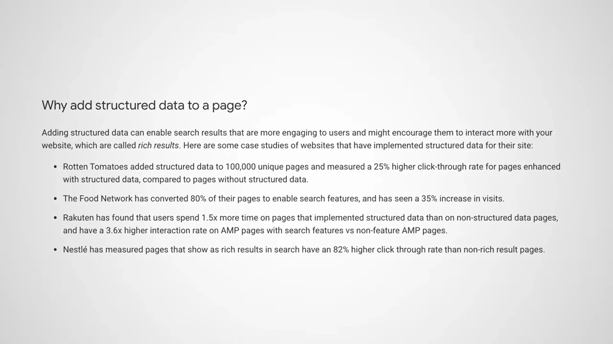
그래서 마크업은 페이지를 더 정확히 설명하는 수단으로 다루고, 약한 콘텐츠를 건너뛰는 지름길로 쓰지 말래요.
결국 사람을 위한 기준이에요
사업주가 왜 신경 써야 할까요? 발표자의 답은 분명한 콘텐츠가 고객이 어디서 오든 도움이 된다는 거예요. 화면에서는 보험 회사 홈페이지 위로 검색, AI 답변, 추천, 직접 방문 네 경로가 떠요. 어느 길로 왔든 도착한 뒤에는 페이지가 신뢰를 얻고 다음 단계를 분명히 보여 줘야 해요. 먼저 살 수도 있는 사람을 위해 쓰고, 그렇게 생긴 분명한 구조가 검색과 AI에도 페이지를 해석할 더 나은 기회를 준다는 순서예요.
발표자가 쓰는 기준은 아주 단순해요. 슬라이드의 질문 네 개예요.
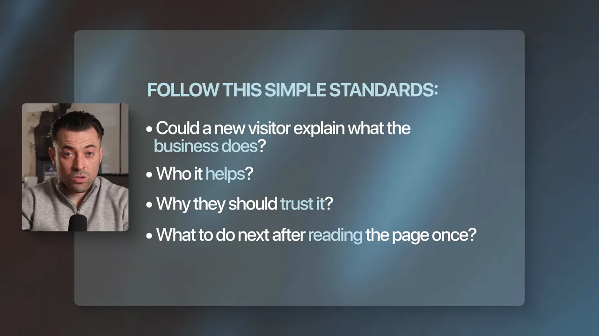
이 기준은 앞에서 본 홈페이지의 네 가지 일과 거의 같은 말이에요. 다섯 트렌드 모두 결국 분명한 제안, 쓸 수 있는 페이지, 사람이 이해할 수 있는 내용에 달려 있다는 말로 영상이 끝나요.